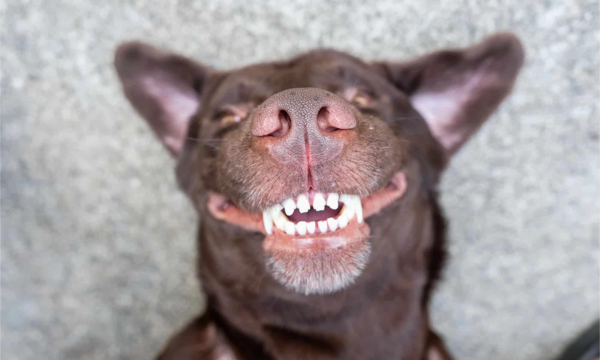

Salud
Salud dental: Mucho más que un mal aliento
A menudo ignoramos la boca de nuestras mascotas hasta que el mal aliento se vuelve insoportable. Sin embargo, la salud dental es crítica. Se estima que el 80% de los perros y el 70% de los gatos tienen algún grado de enfermedad periodontal a los 3 años de edad.
1. El peligro invisible: Placa y Sarro
Después de comer, las bacterias forman una película llamada placa. Si no se remueve, en 48 horas se mineraliza y se convierte en sarro (esa capa dura y marrón). El sarro empuja la encía, creando bolsillos donde las bacterias proliferan, destruyendo el hueso y causando la caída de los dientes.
Lo más grave es que estas bacterias pueden entrar al torrente sanguíneo y viajar a órganos vitales, causando infecciones en el corazón (endocarditis), hígado y riñones.
2. Cómo cepillar los dientes de tu perro
El cepillado es el "estándar de oro" para la prevención. No es necesario hacerlo después de cada comida, pero sí al menos 3 veces por semana. Aquí te mostramos cómo hacerlo correctamente:
3. El rol del alimento seco y snacks
La alimentación juega un rol importante. El alimento seco (croquetas) ayuda por fricción mecánica a reducir la acumulación de placa en comparación con la comida blanda o casera.
Además, existen snacks dentales funcionales diseñados para limpiar los dientes mientras mastican. Sin embargo, recuerda que nada reemplaza al cepillado regular y a la limpieza profesional veterinaria anual.